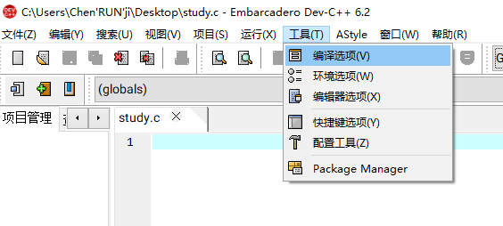
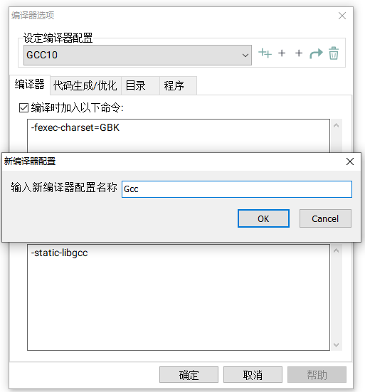
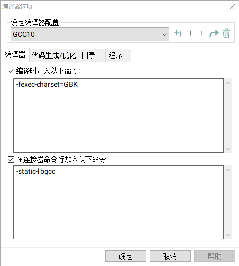
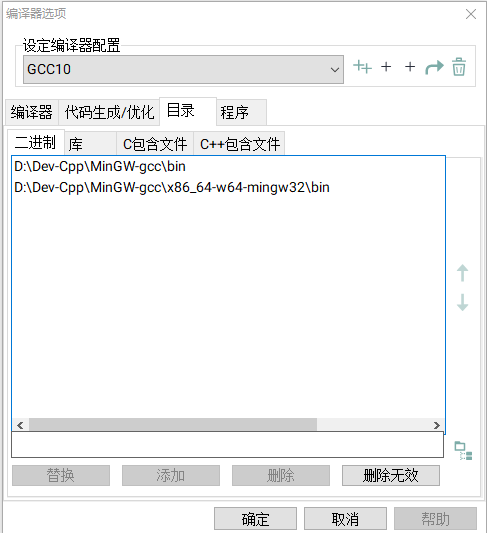
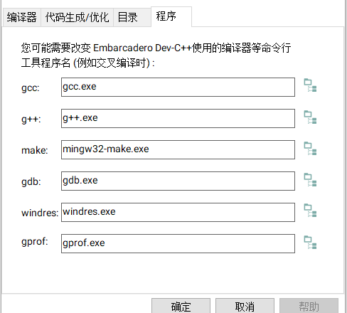
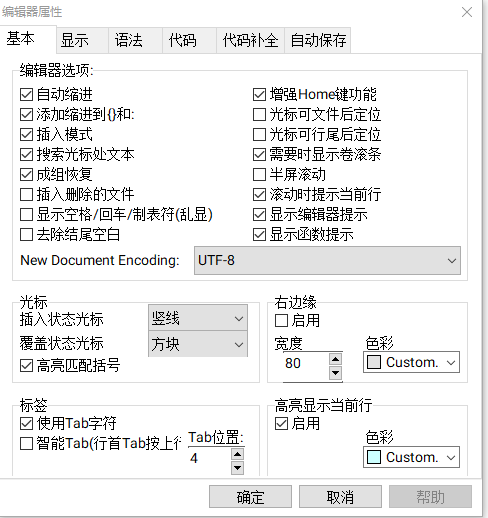

Dev-C++配置
VS过于臃肿并且无法直接对C文件进行编译操作，所以我又又又回到了DEVcpp。
Dev cpp原版已经停止更新很久了，这里我下载的是由之后的公司续命的新版Embarcadero-Dev, 下载之后并不自带编译器，需要配置，简单记录以下配置过程方便以后查看。
配置编译器
新建编译器

找到编译选项，新建一个编译选项。

第二个加号，名字随便取，建议【名称+版本】的方式。
在编译时加入以下命令是为了gbk编码可以正常的输出中文。下面的连接器命令是静态编译，防止了缺库不能运行的弊端。

1 | -fexec-charset=GBK |
配置编译器

在目录下，把对应的编译器的路径写上去，这四个都写，最后两个的路径是一样的。
之后在最后一栏的程序这里：

如果有多个编译器的话，这里在第二个编译器建议写绝对路径，不然默认还是第一个编译器的路径。编译器就配置成功了。
完善DEV
中文字体显式
默认情况下，中文字体只有在鼠标点上去才会显式，通过修改编译器选项里的中间的编码格式可以解决。

将其改成UTF-8。然后在第二栏显式里，不选字体里的那个选项（就一个）这样就可以正常显式中文 。
主题设置
通过修改语法选项里的预设的GSS hacker主题，可以让输入框变成黑色，但是周围还是白色的，这里要再修改环境选项里的apperance里的主题来修改边框的颜色，同时修改才能达到全黑的效果。